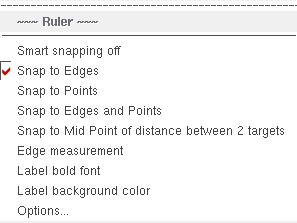
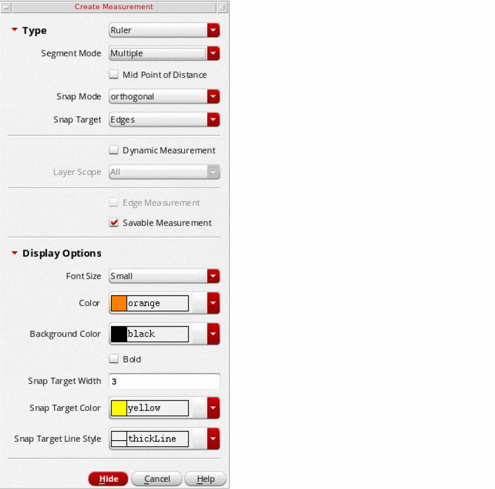
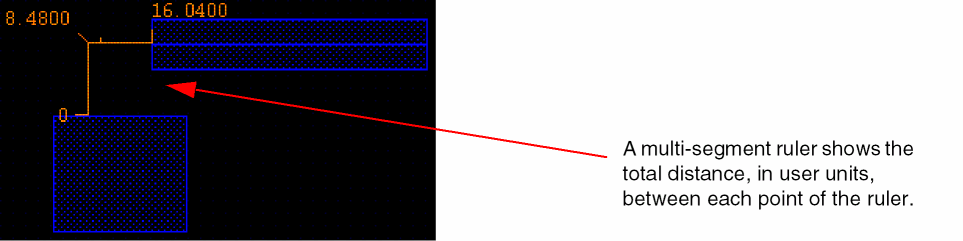

Creating Rulers with Smart Snapping Off
In Smart snapping off mode, the snap targets are not visually highlighted. You cannot cycle through the highlight over potential targets within the distance from the pointer. The ruler object follows the gravity controls settings specified in the Layout Editor Options form. If Gravity On is selected, ruler snapping to the objects in the vicinity of the mouse pointer is enabled. If Gravity On is not selected, you need to create the ruler by specifying the exact start and end points.
In Smart snapping off mode, with Gravity On, the pointer snaps to the specified target type within the aperture distance.
To create a ruler in Smart snapping off mode:
- In the layout window, choose Tools – Create Measurement.
-
Right-click on the canvas to display the ruler shortcut menu and choose Smart snapping off.
 -
Press
F3or select Options from the ruler shortcut menu.
The Create Measurement form opens.
 -
Select the ruler settings you want to use, such as the ruler type and segment mode. Then, click Hide.
For information about the ruler settings, see Create Measurement Form. -
Click on the canvas to specify the starting point of the ruler.
After specifying the starting point, you can move it around on the canvas depending on the snap mode selected. -
Click again on the canvas to specify the end point of the ruler.
If Gravity On is selected in the Layout Editor Options form, you can snap the ruler to the required target edge or point.
If you are creating a multi-segment ruler, click at the end of each segment and double-click to define the end point of the ruler.
 -
Press
Escto finish creating rulers.
Related Topics
Creating Rulers with Snapping On
Return to top